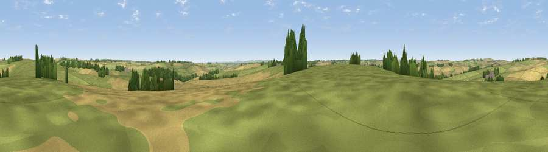

Viewpoint near Lambourn
#26654 in England · top 40% of its area beats it · near Lambourn · footpathWhere it is
The exact computed spot (SU 34475 80925). Click the marker for map links.
Public access: a public right of way passes within 16 m of this spot. Computed from Natural England's CRoW access layer and OpenStreetMap rights of way — not the legal definitive map. Always verify locally.
The view, rendered

A 360° render of this exact spot computed from the terrain model, tree cover and land cover — summer colours, afternoon light, calibrated against photographs of famous viewpoints. Real trees, hedges and buildings will differ in detail.
The panorama
Grey silhouette: terrain skyline in each direction (720 bearings, Earth curvature and refraction included). Dashed green: skyline with trees (+15 m) and buildings (+8 m) as obstacles. Blue strip: how far the ground is visible on each bearing.
Where the view opens
Wedge length = distance to the farthest visible ground on that bearing (vegetation-aware). Rings at 10, 25 and 50 km.
What fills the view
55% grassland · 38% cropland · 6% woodland
Angular shares of the visible panorama (visual magnitude), not map area. Landscape diversity 0.39 (0–1 Shannon).
Key numbers
More beautiful places nearby
The staircase of upgrades: each row has a higher view potential than everything closer. Driving times are estimates from straight-line distance, calibrated against real road routing — check an actual route before setting out.
| Place | Direction | Drive | Score |
|---|---|---|---|
| Viewpoint near Upper Lambourn | NNE · 1 km | ~3 min | 45.0 |
| Viewpoint near Eastbury | S · 2 km | ~6 min | 48.4 |
| Hackpen Hill | N · 4 km | ~10 min | 59.2 |
| Smith's Hill | NE · 5 km | ~10 min | 61.2 |
| Seven Acre Hill | N · 5 km | ~11 min | 66.6 |
| Viewpoint near Kingston Lisle | NNW · 6 km | ~13 min | 68.5 |
| Viewpoint near Woolstone | NW · 7 km | ~14 min | 70.9 |
| Viewpoint near Woolstone | NW · 7 km | ~15 min | 76.7 |
51.52619, -1.50445 · source: screening · position refined by local search. Computed location — check access rights before visiting.